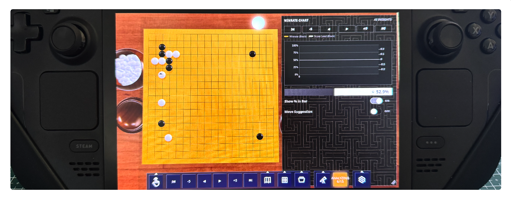

DeepBoardGO 基本操作ガイド
この短いガイドでは、DeepBoardGO で対局や検討を行うときの主なマウス操作と、便利な設定を紹介します。
カメラ操作
- 左マウスボタンを押したままドラッグ：盤の周囲を回り込むように視点角度を変更します。
- 右マウスボタンを押したままドラッグ：盤面上でカメラ位置を移動します。
- マウスホイール：ズームインまたはズームアウトします。
これらの操作により、近距離の検討視点、盤全体の視点、より映画的な 3D アングルをすばやく切り替えられます。
AI 解析操作
AI Analysis を有効にすると、候補手が盤面上に直接表示されます。
- 候補の石にマウスを重ねると、その PV/後続手順をプレビューできます。
- 候補の石の上で左マウスボタンを押し続けると、さらに多くの PV 手を要求できます。
- 進行インジケーターが完了するまで押し続けてください。
現在の局面を変えずに、特定の AI 推奨手をさらに深く確認したいときに便利です。
高度な盤面設定
Advanced Board Settings を開くと、盤の見た目や表示体験をカスタマイズできます。
次のような項目を調整できます。
- 盤のベースカラー
- 格子線の色
- 木材の種類と盤のテクスチャ
- 碁笥の見た目
- 碁石セット、厚み、間隔
- 盤の余白と厚み
- カメラプリセット：Top、Angle、Low
- 照明、背景、視覚効果
これらの設定を使って、研究、スクリーンショット、長時間の検討に適した快適な盤面スタイルを作成できます。

Steam Deck 操作Deep Board Go は Steam Deck でプレイできます。
- タッチスクリーン：メニュー項目を選択します。
- 対局中のタッチスクリーン：囲碁盤を回転します。
- L1 と R1：ズームイン、ズームアウトします。
- L2 を押しながらタッチスクリーンを使用：囲碁盤を移動します。
- 右タッチパッド：マウスカーソルを操作します。
- R2：着手します。
Deep Board Go をプレイしていただき、ありがとうございます。